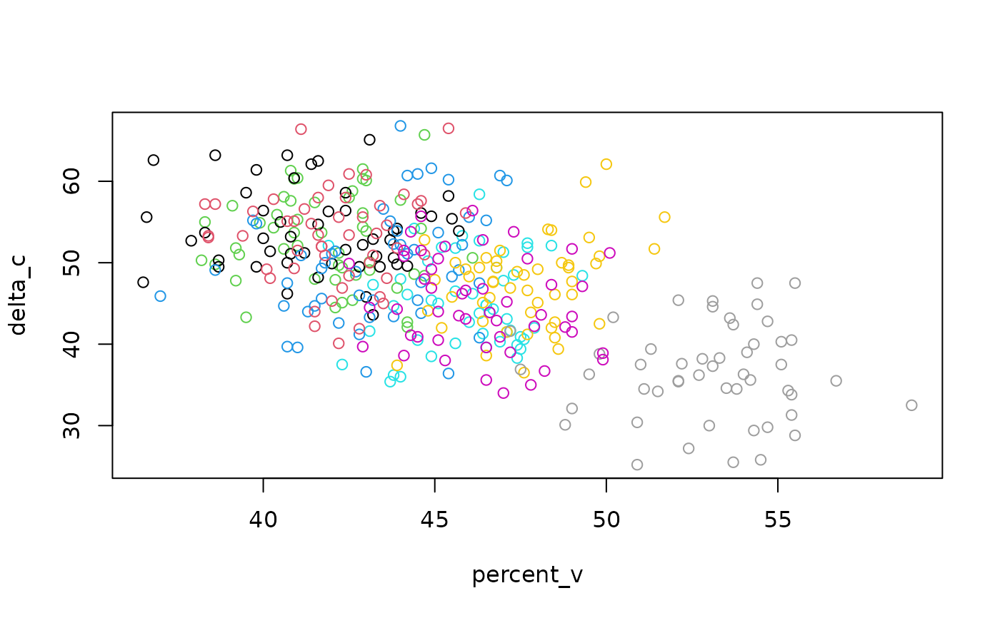

%V, ΔC and VarcoV for 5 sentences from each of 10 speakers of 8 languages. Languages traditionally called stress-timed (English, German, Dutch) have lower %V and higher ΔC and VarcoV, syllable-timed languages (Spanish, Italian) the reverse, and Japanese the highest %V. European Portuguese, with its reduced and deleted vowels, sits closer to the stress-timed languages than Brazilian Portuguese. ΔC falls with speech rate; VarcoV is rate-normalised. For classifying languages by their rhythm metrics.
Format
A tibble with 400 rows and 7 columns:
- language
"English","German","Dutch","European Portuguese","Brazilian Portuguese","Spanish","Italian"or"Japanese".- speaker
Speaker ID, e.g.
Eng_01.- sentence
sent1tosent5.- rate
Speech rate in syllables per second.
- percent_v
Percentage of the sentence that is vocalic.
- delta_c
Standard deviation of consonantal intervals in ms.
- varco_v
Coefficient of variation of vocalic intervals.
Details
True model: language means for %V, ΔC and VarcoV are 41, 54, 65 (English), 42, 52, 62 (German), 42, 53, 63 (Dutch), 43, 50, 58 (European Portuguese), 46, 45, 52 (Brazilian Portuguese), 46, 46, 48 (Spanish), 47, 47, 52 (Italian) and 53, 36, 45 (Japanese). These values follow the ordering reported in the literature and were chosen for the simulation. ΔC falls by 6 ms per syllable per second. By-speaker variation: SD 1.2 for %V, 3 ms for ΔC, 0.4 syll/s for rate.
References
Ramus, F., Nespor, M. & Mehler, J. (1999). Correlates of linguistic rhythm in the speech signal. Cognition, 73(3), 265-292. doi:10.1016/S0010-0277(99)00058-X
White, L. & Mattys, S. L. (2007). Calibrating rhythm: First language and second language studies. Journal of Phonetics, 35(4), 501-522. doi:10.1016/j.wocn.2007.02.003
Frota, S. & Vigário, M. (2001). On the correlates of rhythmic distinctions: The European/Brazilian Portuguese case. Probus, 13(2), 247-275. doi:10.1515/prbs.2001.005
Examples
means <- aggregate(cbind(percent_v, delta_c, varco_v) ~ language,
data = rhythm_metrics, FUN = mean)
means[order(means$percent_v), ]
#> language percent_v delta_c varco_v
#> 1 English 41.586 53.914 65.460
#> 3 Dutch 41.850 52.832 63.088
#> 2 German 42.028 53.136 61.564
#> 4 European Portuguese 43.314 49.806 57.650
#> 5 Brazilian Portuguese 45.908 45.086 52.816
#> 6 Spanish 46.292 45.020 46.400
#> 7 Italian 47.606 47.440 52.362
#> 8 Japanese 53.018 36.492 44.206
plot(delta_c ~ percent_v, data = rhythm_metrics, col = language)

coef(lm(delta_c ~ rate + language, data = rhythm_metrics))["rate"]
#> rate
#> -6.527458